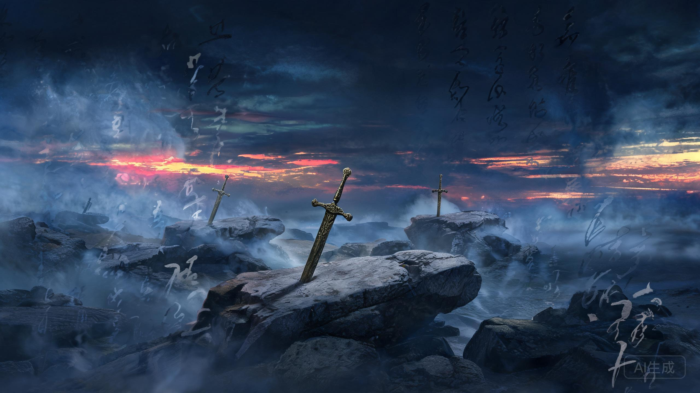
风胡子剑谱排名 · 动漫原创设定与原著小说之对比
《秦时明月》是中国首部武侠3D动画剧，灵感来源于温世仁原著武侠小说。在动漫中，楚国著名相剑师风胡子品鉴天下名剑，编成"风胡子剑谱"，其中排名前十的剑被世人合称"十大名剑"。每一把名剑都有其独特的来历、气质与剑主，承载着战国末期群雄逐鹿的江湖恩怨。
值得注意的是，温世仁原著小说中并无任何名剑排名，动漫中提及的名剑在原著中一把也不存在[1]。小说中的"剑谱"一词指的是公孙家代代相传的公孙剑法剑谱，后经荆轲改良为"惊天十八剑"，与动漫中的名剑排行体系截然不同。
小说与动漫虽共享同一世界观和人物，但在"剑"这一核心意象上有着根本性的创作分歧：
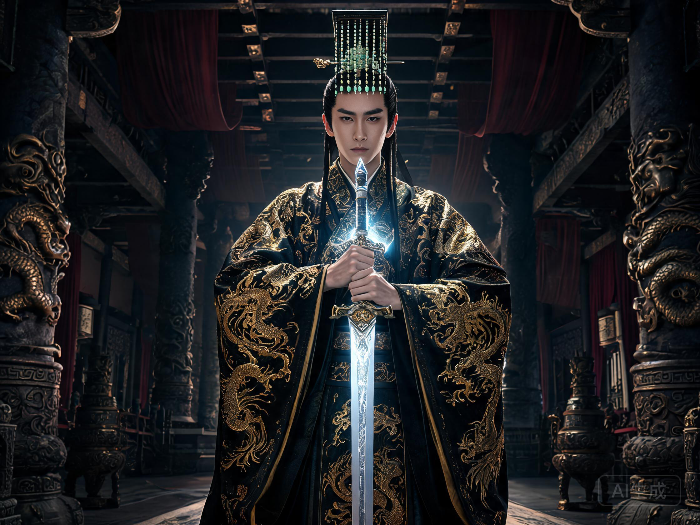
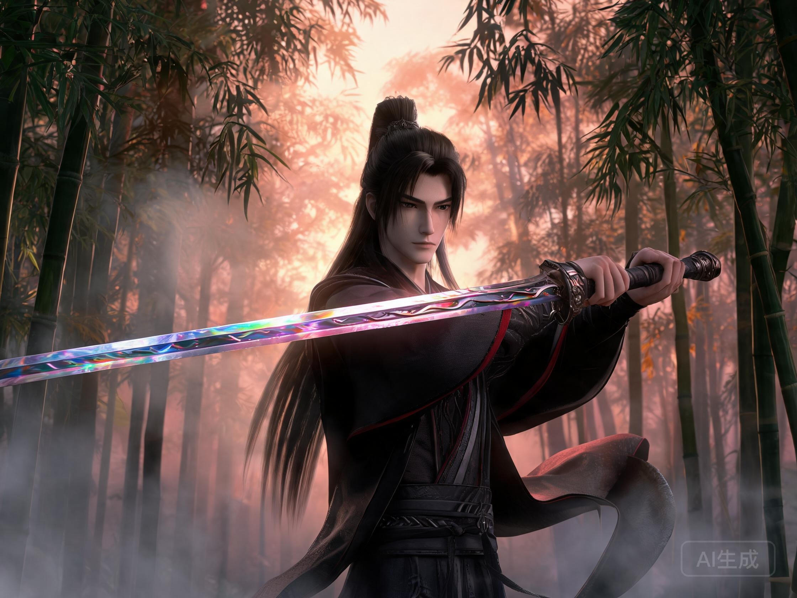
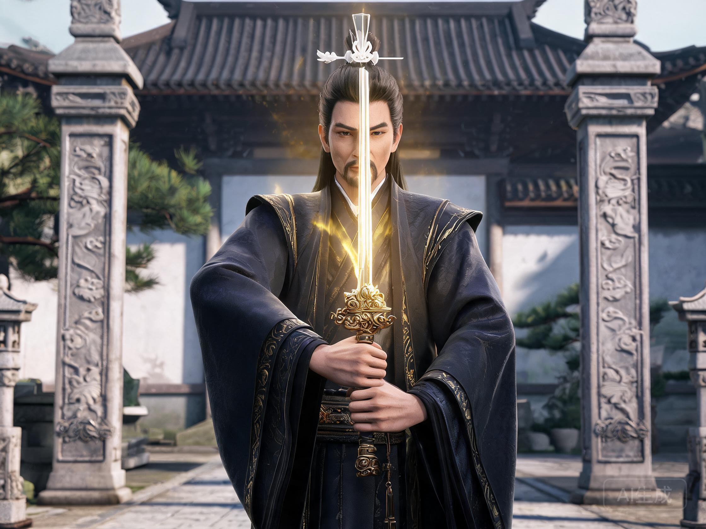
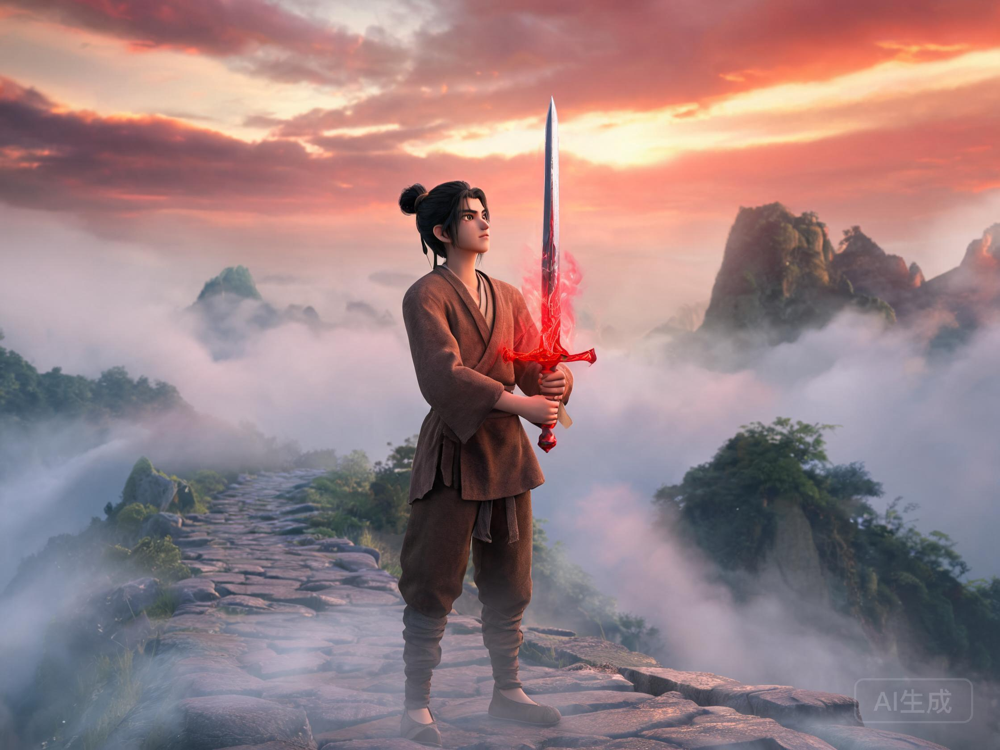
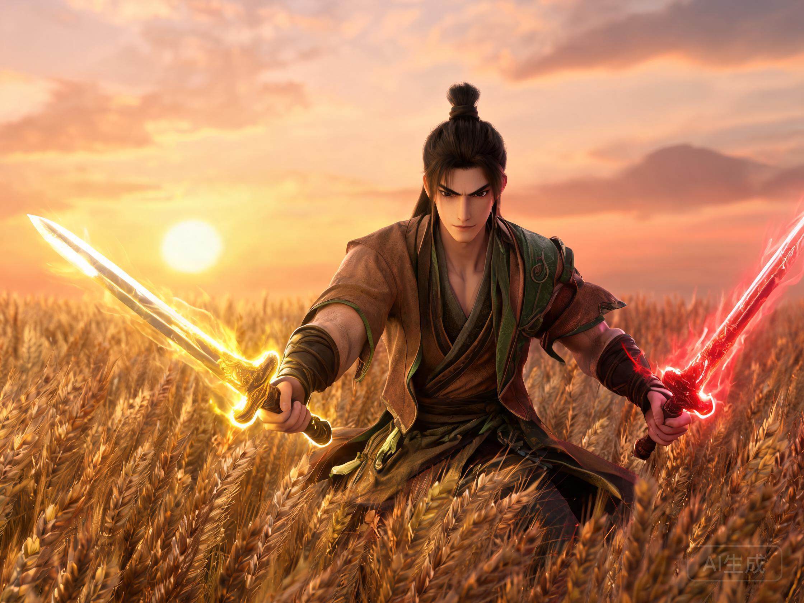
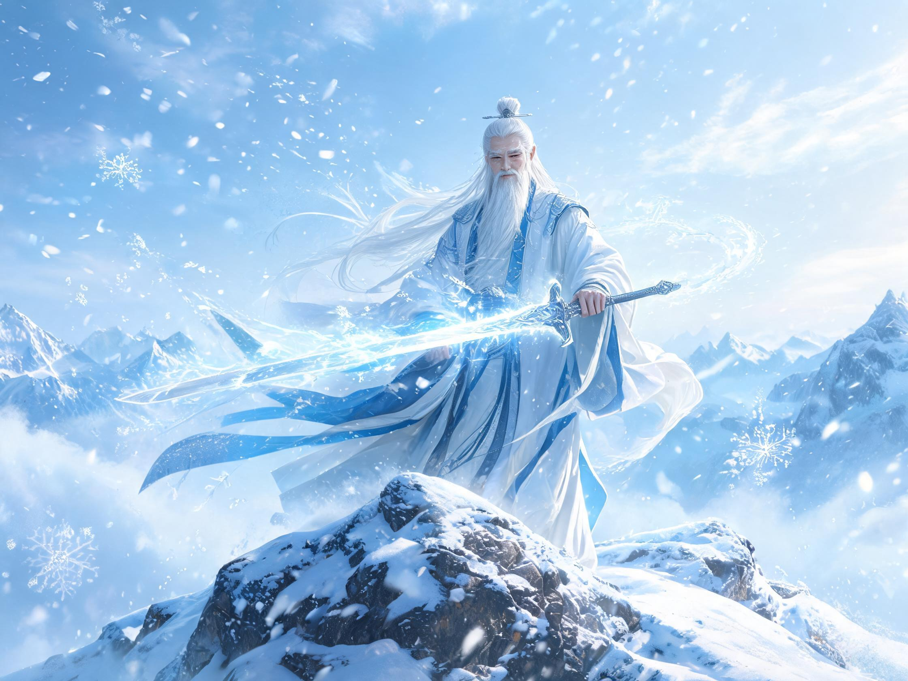
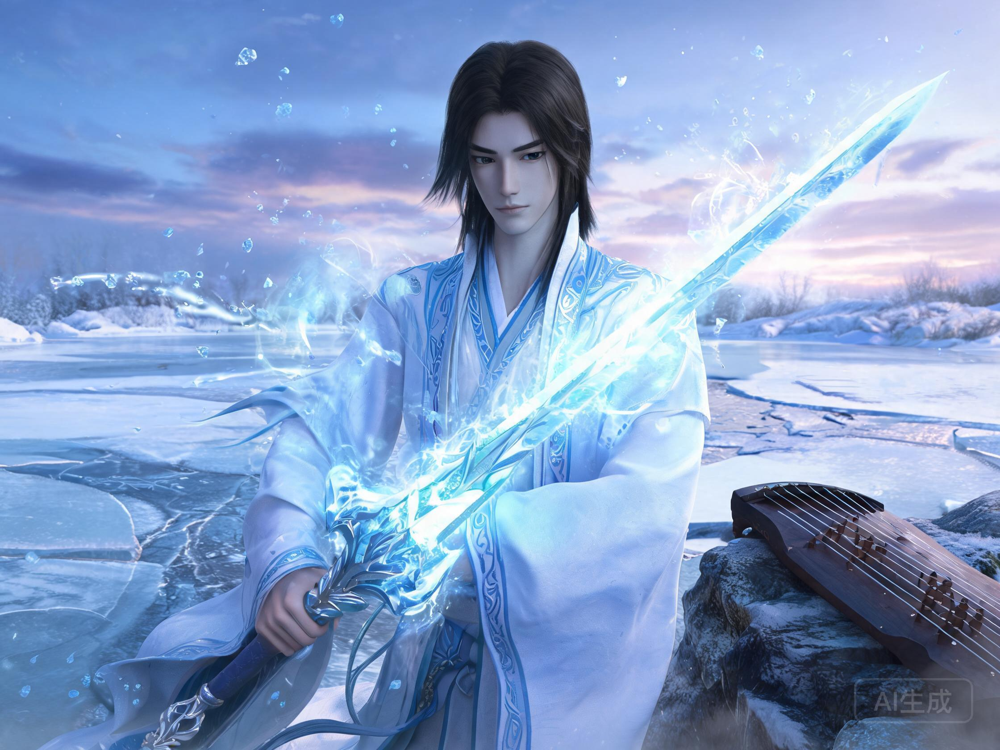
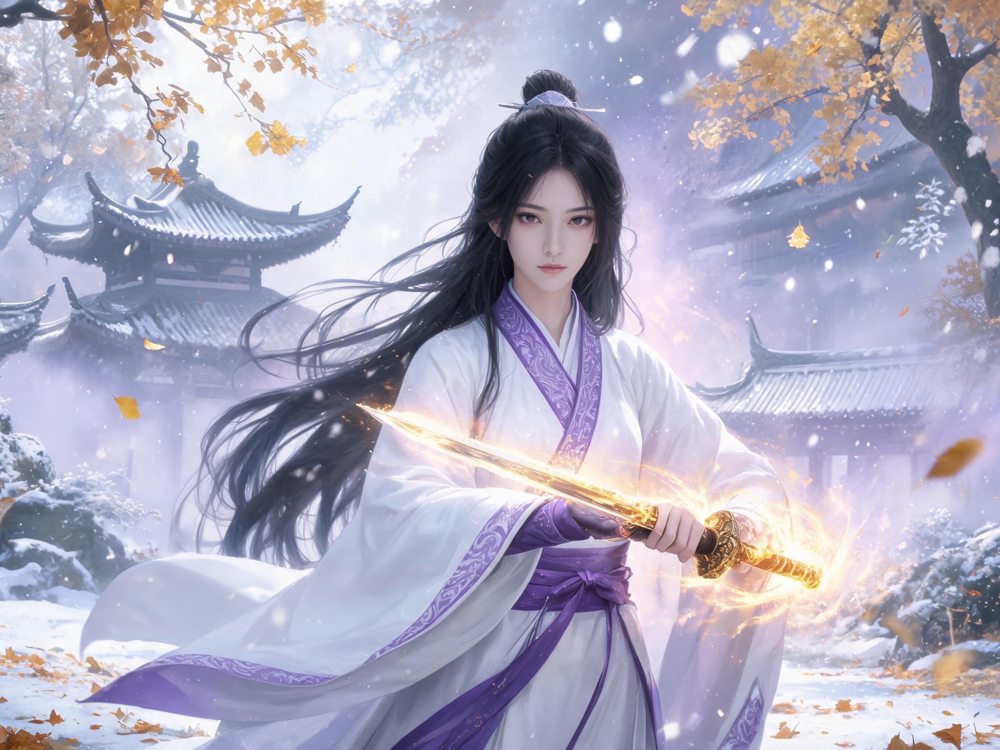
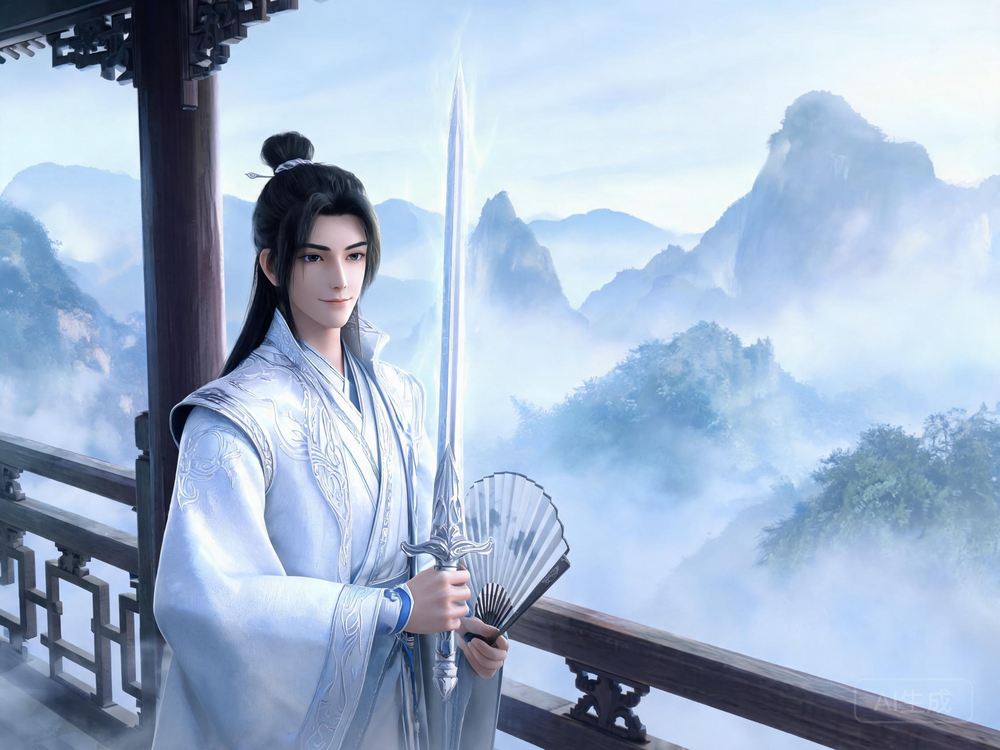
除十大名剑外，风胡子剑谱中还收录了更多名剑，以及未被剑谱收录的传奇之剑。以下为动漫中出现过的全部剑谱名剑及知名未入榜之剑：
| 排名 | 剑名 | 剑主 | 门派/身份 | 备注 |
|---|---|---|---|---|
| 1 | 天问 | 秦始皇 | 帝王 | 天子之剑，藏于咸阳宫 |
| 2 | 渊虹 | 盖聂 | 纵横家/剑圣 | 残虹重铸，后为鲨齿所断 |
| 3 | 太阿 | 伏念 | 儒家 | 威道之剑，欧冶子干将所铸 |
| 4 | 赤霄 | 刘季（刘邦） | 农家 | 斩白蛇之剑，尚未完全登场 |
| 5 | 干将莫邪 | 田赐 | 农家 | 雌雄双剑 |
| 6 | 雪霁 | 逍遥子 | 道家人宗 | 历代掌门信物，二宗争夺 |
| 7 | 水寒 | 高渐离 | 墨家 | 徐夫子所铸，与渊虹相克 |
| 8 | — | — | — | 官方未公布 |
| 9 | 秋骊 | 晓梦 | 道家天宗 | 传闻威力在雪霁之上 |
| 10 | 凌虚 | 张良 | 儒家 | 无半分血腥，飘然仙风 |
| 11 | 巨阙 | 胜七（陈胜） | 农家 | 原排名200+，胜七使用后飙升至11 |
| 12 | 虎魄 | 田虎 | 农家 | — |
| 13 | 天照 | 徐福（云中君） | 阴阳家 | — |
| 16 | 含光 | 颜路 | 儒家 | 儒家二当家佩剑 |
| — | 鲨齿 | 卫庄 | 流沙 | 妖剑，未入剑谱，渊虹克星 |
| — | 墨眉 | 荆天明 | 墨家 | 墨家巨子信物 |
| — | 非攻 | — | 墨家 | 机关类宝剑，后落入阴阳家 |
| — | 残虹 | 荆轲 | — | 渊虹前身，陨铁所铸，太过凶戾 |
| — | 潜蛟 | 韩信 | 兵家 | — |
| — | 逆鳞 | 韩非 | 法家 | — |
注：越王八剑（掩日、惊鲵、玄翦、真刚、转魄、灭魂、断水、魍魉）为罗网组织天字一等杀手所持，编号独立于风胡子剑谱体系，此处未列入。[2]
以下图表展示风胡子剑谱中已知名剑的排名分布及所属门派。可以清晰看到，儒家与道家各占两席，农家亦有多柄名剑，而墨家的水寒与纵横家的渊虹构成了剑谱的核心张力。
有些剑虽不在风胡子剑谱之内，却拥有不逊于十大名剑的传奇地位与战斗力。其中最著名的，莫过于被称为"妖剑"的鲨齿。
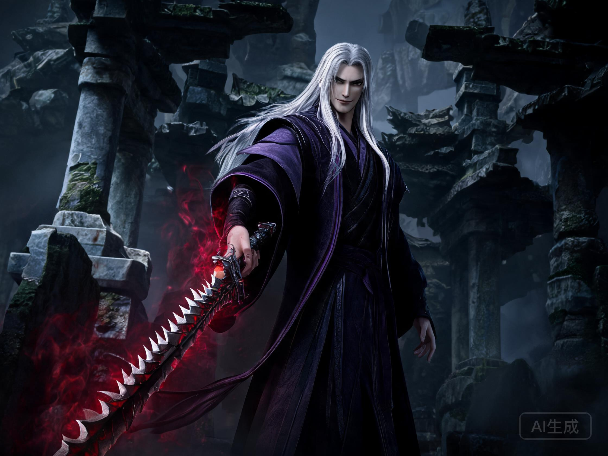
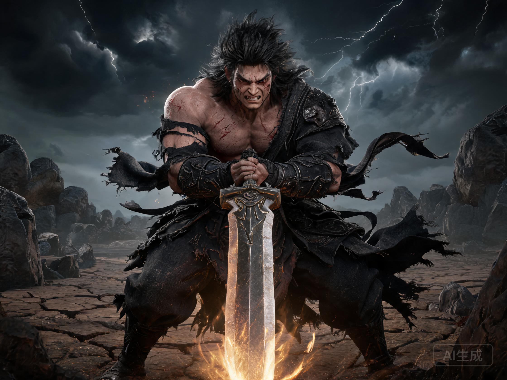
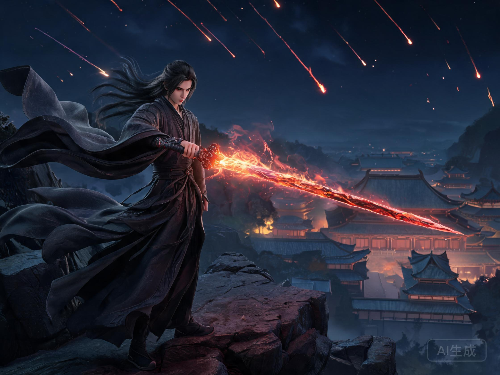
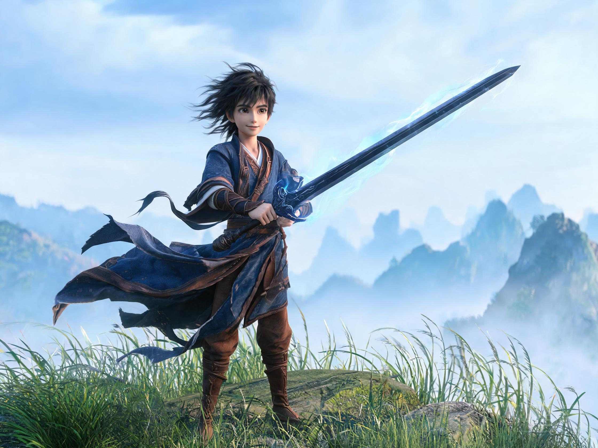
在《秦时明月》的名剑体系中，铸剑世家徐家扮演着至关重要的角色。这个家族的每一位成员都铸造了影响天下格局的名剑：
以下图表以门派为维度，展示各派所持名剑的数量分布。可以看到，儒家凭借太阿与凌虚占据两席，道家以雪霁与秋骊分庭抗礼，而农家虽非显赫门派，却拥有赤霄、干将莫邪、巨阙、虎魄等多柄名剑，堪称名剑第一大派。
温世仁的原著小说以人物与情义为核心，剑是推动故事的工具——公孙剑法剑谱从公孙羽传至荆轲，荆轲以血书托付盖聂，盖聂再传荆天明，一条"剑谱传承"线贯穿始终。小说中的"剑"承载的是师徒之义、父子之情、家国之恨。
而玄机科技的动漫改编在此基础上创造了"风胡子剑谱"这一宏大设定，将"剑"升格为独立于人物之外的角色——每一把名剑都有自己的来历、铸者、气质与宿命。从天问的帝王之威到凌虚的智者之雅，从渊虹与鲨齿的宿命对决到徐家三代铸剑师的恩怨传承，名剑体系为《秦时明月》的江湖增添了超越小说原著的深度与魅力。
正如原著所言，剑谱上的名剑都有独到之处，排名高低不代表强弱之分。真正的强大，不在于剑的排名，而在于持剑者的心——正如太阿之威取决于持剑者内心之威，正如巨阙从二百名外飙升至第十一。剑为人所用，人为剑之魂。